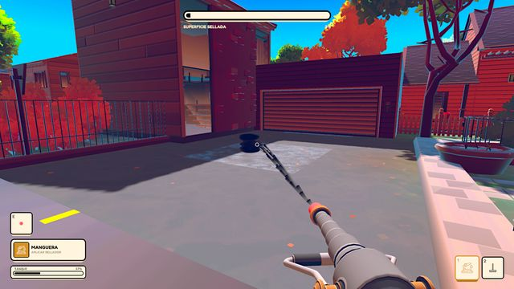
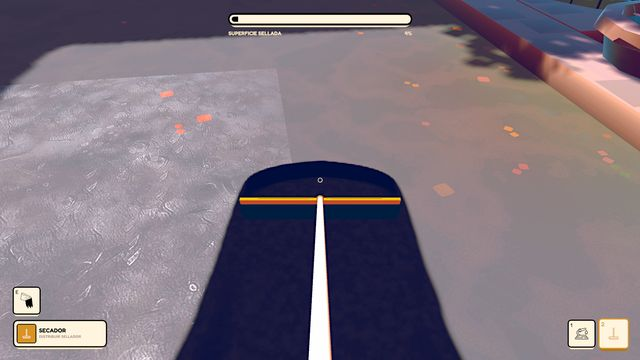
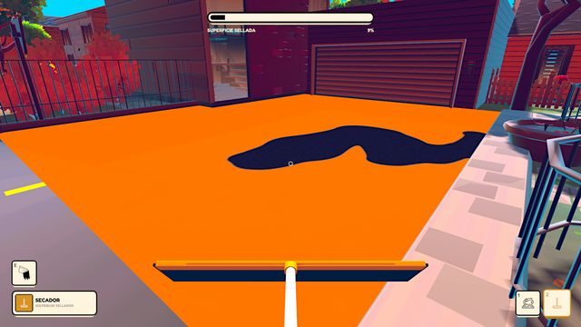
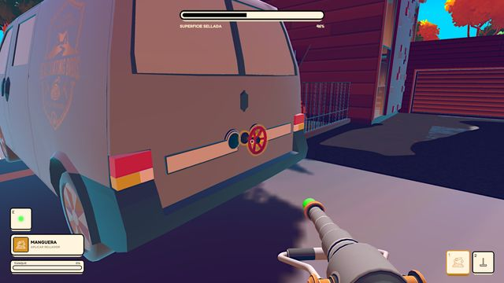
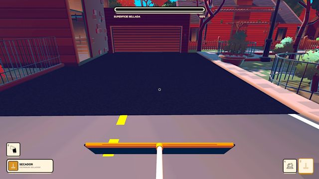
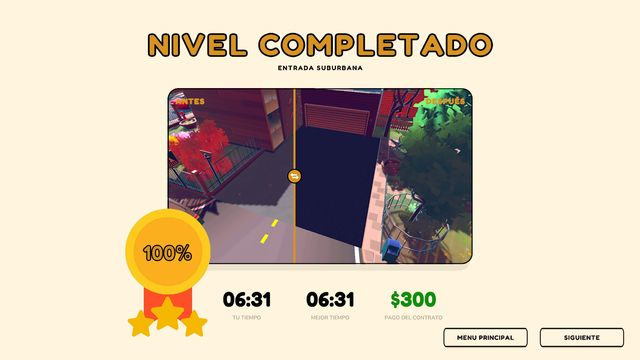

Sealcoating Simulator
Simulador cozy en primera persona sobre sellar asfalto, en desarrollo en ACE 87 Studios para PC. Cooperativo local y online para hasta cuatro jugadores, por ahora.
Estoy a cargo del diseño del juego y de los niveles: el core loop, las mecánicas, cada nivel jugable y la curva de ritmo que sostiene el interés desde el primer chorro hasta el 100% de cobertura.
La dificultad no se regula con números. El sellador se comporta como un fluido: fluye, se encharca y se asienta, así que ninguna superficie se resuelve dos veces igual. Lo que gradúa la exigencia es la geometría del espacio, los obstáculos y la capacidad del tanque.
En un cozy la fricción tiene que estar en la tarea, nunca en orientarse. Por eso las zonas sin cubrir se resaltan y las estaciones de recarga se ven a través de las paredes: nadie pierde tiempo preguntándose qué le falta ni adónde ir.